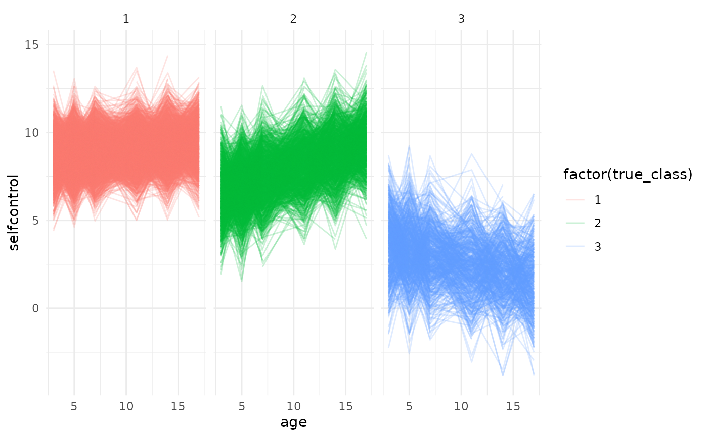
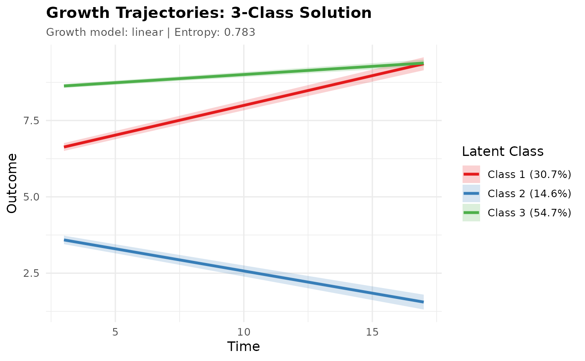

Simulated longitudinal data resembling the UK Millennium Cohort Study (MCS). Contains self-control trajectories from ages 3 to 17 with three latent classes, along with complex survey design features (stratification, clustering, weights).
Format
A data frame with 29,400 rows and 14 variables:
- id
Individual identifier (1 to 5000)
- age
Age at assessment (3, 5, 7, 11, 14, 17 years)
- selfcontrol
Self-control score (continuous, higher = better)
- true_class
True latent class membership (1, 2, or 3) - for validation only
- stratum
Stratum indicator (1 to 4)
- stratum_factor
Stratum labels: England-Advantaged, England-Disadvantaged, Scotland/Wales, Northern Ireland
- cluster
Primary sampling unit (PSU) identifier (1 to 200)
- weight
Sampling weight (inverse probability weight)
- sex
Sex (0 = Female, 1 = Male)
- sex_factor
Sex labels (Female, Male)
- baseline_risk
Baseline risk score (standardized, continuous)
- ses
Socioeconomic status (standardized, continuous)
- delinquency
Delinquency score at age 17 (0-10, higher = more delinquent)
- academic_achievement
Academic achievement score (IQ-like, mean ~100)
Source
Simulated using simulate_gmm_survey with parameters inspired by:
Moffitt, T. E. (2006). Life-course-persistent versus adolescence-limited antisocial behavior. In D. Cicchetti & D. J. Cohen (Eds.), Developmental psychopathology (2nd ed., pp. 570-598). Wiley.
The actual Millennium Cohort Study data can be accessed through the UK Data Service: https://ukdataservice.ac.uk/
Details
This dataset is designed to mimic key features of the UK Millennium Cohort Study for teaching and demonstration purposes. It contains:
Three Latent Classes:
Class 1 (55%): High self-control, stable trajectory
Class 2 (30%): Moderate self-control, improving trajectory
Class 3 (15%): Low self-control, declining trajectory
Survey Design:
Stratified by region (4 strata)
Clustered within PSUs (200 clusters)
Probability weights to adjust for unequal sampling
~12% missing data (MAR mechanism)
Auxiliary Variables:
Delinquency and academic achievement are related to latent class
Useful for demonstrating R3STEP analysis
Sex and SES are time-invariant predictors
Important: The true_class variable is included only for
validation and teaching. In real applications, true class membership is
unknown and must be estimated.
Examples
# \donttest{
# Load data
data(mcs_simulated)
# Explore structure
head(mcs_simulated)
#> id age selfcontrol true_class stratum stratum_factor cluster weight sex
#> 1 1 3 7.957458 1 1 England-Advantaged 4 1.67376 0
#> 2 1 5 8.743287 1 1 England-Advantaged 4 1.67376 0
#> 3 1 7 7.870951 1 1 England-Advantaged 4 1.67376 0
#> 4 1 11 7.865990 1 1 England-Advantaged 4 1.67376 0
#> 5 1 14 8.786867 1 1 England-Advantaged 4 1.67376 0
#> 6 1 17 10.682235 1 1 England-Advantaged 4 1.67376 0
#> sex_factor baseline_risk ses delinquency academic_achievement
#> 1 Female -0.9405599 0.4883848 2.43329 88.09379
#> 2 Female -0.9405599 0.4883848 2.43329 88.09379
#> 3 Female -0.9405599 0.4883848 2.43329 88.09379
#> 4 Female -0.9405599 0.4883848 2.43329 88.09379
#> 5 Female -0.9405599 0.4883848 2.43329 88.09379
#> 6 Female -0.9405599 0.4883848 2.43329 88.09379
table(mcs_simulated$true_class)
#>
#> 1 2 3
#> 16626 8970 4404
# Visualize trajectories by true class
library(ggplot2)
ggplot(mcs_simulated, aes(x = age, y = selfcontrol, group = id,
color = factor(true_class))) +
geom_line(alpha = 0.2) +
facet_wrap(~true_class) +
theme_minimal()
#> Warning: Removed 1645 rows containing missing values or values outside the scale range
#> (`geom_line()`).

# Fit 3-class model
fit <- gmm_survey(
data = mcs_simulated,
id = "id",
time = "age",
outcome = "selfcontrol",
n_classes = 3,
strata = "stratum",
cluster = "cluster",
weights = "weight",
starts = 10, # Use more for final analysis
cores = 2
)
#> Validating inputs...
#> Validating survey design...
#> Warning: Survey design warnings:
#> 262 potential outliers (>3 SD from mean)
#>
#> Run validate_survey_data() for full details.
#> Preparing data...
#> N = 5000 individuals
#> T = 6 time points
#> Time scores: 3, 5, 7, 11, 14, 17
#> Survey weights: range = [0.30, 2.16], mean = 1.00
#> Stratification: 4 strata
#> Clustering: 200 clusters (PSUs)
#>
#> Running 10 random starts with 3 classes...
#> Using 2 cores for parallel processing
#>
#> Selecting best solution...
#> Best logLik: -48800.8548
#> Replicated 1 times
#> 10/10 starts converged
#> Warning: Best log-likelihood not replicated. Consider increasing 'starts'.
#>
#> Computing survey-adjusted standard errors...
#> Computing fit indices...
#>
#> Completed in 166.1 seconds
summary(fit)
#> ========================================
#> Growth Mixture Model - Detailed Summary
#> ========================================
#>
#> MODEL SPECIFICATION
#> -------------------
#> Growth model: linear
#> Number of classes: 3
#> Sample size: 5000
#> Time points: 6
#> Time scores: 3, 5, 7, 11, 14, 17
#>
#> SURVEY DESIGN
#> -------------
#> Sampling weights: Yes
#> Stratification: 4 strata
#> Clustering: 200 PSUs
#> Nested design: Yes
#>
#> GROWTH PARAMETERS
#> -----------------
#>
#> Class 1 (n = 1376.0, 30.7%):
#> Intercept: 6.047 (SE = 0.064)
#> Slope: 0.195 (SE = 0.005)
#> Residual SD: 1.496 (SE = 0.341)
#>
#> Class 2 (n = 734.0, 14.6%):
#> Intercept: 4.025 (SE = 0.069)
#> Slope: -0.145 (SE = 0.006)
#> Residual SD: 1.795 (SE = 0.285)
#>
#> Class 3 (n = 2890.0, 54.7%):
#> Intercept: 8.471 (SE = 0.034)
#> Slope: 0.053 (SE = 0.003)
#> Residual SD: 1.223 (SE = 0.416)
#>
#> CLASS PROPORTIONS
#> -----------------
#> Class Weighted Unweighted
#> 1 0.307 0.304
#> 2 0.146 0.147
#> 3 0.547 0.549
#>
#> FIT INDICES
#> -----------
#> Log-likelihood: -48800.85
#> Parameters: 11
#> AIC: 97623.71
#> BIC: 97695.40
#> aBIC: 97660.44
#> Entropy: 0.783
#> Average posterior prob: 0.921
#>
#> CLASSIFICATION QUALITY
#> ----------------------
#> Class AvePP OCC
#> 1 0.873 6.88
#> 2 0.999 1945.84
#> 3 0.890 8.06
#>
#> CONVERGENCE
#> -----------
#> Status: Converged
#> Iterations: 7
#> Random starts: 10
#> Best logLik: -48800.85
#> Replications: 1
#>
#> WARNING: Best solution not replicated. Consider increasing 'starts'.
#>
#> Computation time: 166.1 seconds
#>
#> ========================================
plot(fit, type = "trajectories")

# Compare estimated vs true classification
table(Estimated = fit@class_assignments,
True = mcs_simulated$true_class[!duplicated(mcs_simulated$id)])
#> True
#> Estimated 1 2 3
#> 1 154 1222 0
#> 2 0 0 734
#> 3 2617 273 0
# R3STEP analysis with distal outcomes
r3step_results <- r3step(
gmm_object = fit,
distal_vars = c("delinquency", "academic_achievement"),
data = mcs_simulated[!duplicated(mcs_simulated$id), ]
)
summary(r3step_results)
#> R3STEP Analysis Results
#> =======================
#>
#> Method: BCH
#> Distal variables: delinquency, academic_achievement
#> Number of classes: 3
#>
#> Class-Specific Means:
#> Class_1 Class_2 Class_3
#> delinquency 3.172 4.990 2.869
#> academic_achievement 98.116 100.903 100.472
#>
#> Standard Errors:
#> Class_1 Class_2 Class_3
#> delinquency 0.042 0.031 0.039
#> academic_achievement 0.342 0.180 0.290
#>
#> Omnibus Tests:
#> variable F_stat df1 df2 p_value
#> delinquency 616.82335 2 17191.69 1.959060e-259
#> academic_achievement 39.75193 2 17191.69 5.966969e-18
#>
#> (Pairwise comparisons available, view with: r3step_result@test_results[['var']]$pairwise)
#>
#> ---
#> Use summary() for detailed results including pairwise comparisons
#>
#>
#> Effect Sizes (Cohen's d):
#> -------------------------
#> Class1_vs_Class2 Class1_vs_Class3 Class2_vs_Class3
#> delinquency -0.97 0.16 1.17
#> academic_achievement -0.21 -0.16 0.04
# }